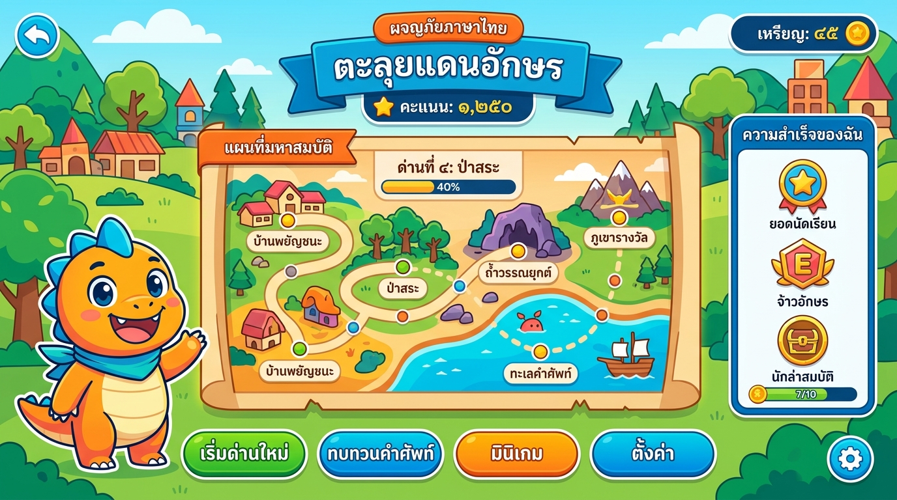

ชุดไอเดียและ Master Prompt สำหรับสั่ง AI พัฒนาเป็น Web Application เกมการศึกษาภาษาไทย 20 รูปแบบ ออกแบบตามหลักสูตรแกนกลาง สามารถปรับเปลี่ยนระดับชั้น หน่วยการเรียนรู้ และข้อมูลเฉพาะของคุณครูได้ทันที พร้อมระบบประเมินผลและ Feedback ทางหลักภาษา

สร้างเร็ว ใช้งานในชั้นเรียนได้ทันที โครงสร้างข้อมูลไม่ซับซ้อน ได้ผลลัพธ์การเรียนรู้ชัดเจน
ใช้ข้อมูลชุดคำศัพท์ จับเวลา สุ่มบัตรคำ และแสดงเฉลยทันที
ตรวจคำผิด วรรคตอน คำฟุ่มเฟือย ในบทความจำลองสั้นๆ
Drag & Drop เรียงประโยคพื้นฐาน ประโยคความรวม หรือความซ้อน
เกมตอบไว Quiz Arena สะสมคอมโบคะแนนและเวลาที่ใช้
อ่านบทความสั้น ไฮไลต์ข้อเท็จจริง ความคิดเห็น และหลักฐาน
คลิกปุ่ม "Copy Prompt" ในแต่ละเกมเพื่อนำคำสั่งไปวางสั่ง AI (ChatGPT, Claude, Gemini) สร้าง Web App ได้ทันที
ปรับแต่งข้อกำหนดของเกมตามระดับชั้น หน่วยการเรียนรู้ และเนื้อหาเฉพาะของคุณครู แล้วระบบจะประกอบเป็น Prompt ที่พร้อมสั่ง AI เขียนโค้ด Web Application ได้อย่างแม่นยำ
เพื่อให้เกมเป็น "การเรียนรู้ผ่านเกม (Game-based Learning)" ที่แท้จริง ไม่ใช่เพียงแบบทดสอบจับเวลาใส่คะแนน
ระบุพฤติกรรมเป้าหมาย เช่น "จำแนกคำยืมได้" หรือ "เรียงประโยคสื่อสารได้ถูกต้อง"
กำหนดระดับอายุ และจัดด่าน ง่าย / ปานกลาง / ท้าทาย เพื่อรองรับความแตกต่างระหว่างบุคคล
ไม่เฉลยแค่ถูก/ผิด แต่ต้องให้เหตุผล อ้างอิงหลักไวยากรณ์ และยกตัวอย่างการใช้งานเพิ่มเติม
ให้ผู้เรียนได้ลองเล่นและทบทวนเนื้อหาก่อนจับเวลาจริง ช่วยลดความกังวลในห้องเรียน
แนะแนวทางการคิดหรือจุดสังเกต ไม่ใช่บอกเฉลยคำตอบโดยตรงทันที
ให้คะแนน Streak และการพยายามแก้ไขคำตอบ ไม่จำกัดเฉพาะผู้ที่ตอบเร็วที่สุด
วิเคราะห์เจาะจง เช่น สับสนคำลักษณนามประเภทใด หรือยังแยกข้อเท็จจริงไม่ออก
คุณครูสามารถเพิ่ม/แก้ไขโจทย์ได้เองผ่าน JSON, CSV หรือหน้าจอ CMS โดยไม่ต้องแก้โค้ด
ตัวอักษรใหญ่ ปุ่มกดชัดเจน สีคอนทราสต์ และมีปุ่มฟังเสียงสังเคราะห์
คำราชาศัพท์ การสะกด และหลักภาษาควรตรวจสอบตามพจนานุกรมราชบัณฑิตยสถาน และมีระบบให้ครูตรวจทานเนื้อหาก่อนนำไปสอนจริง